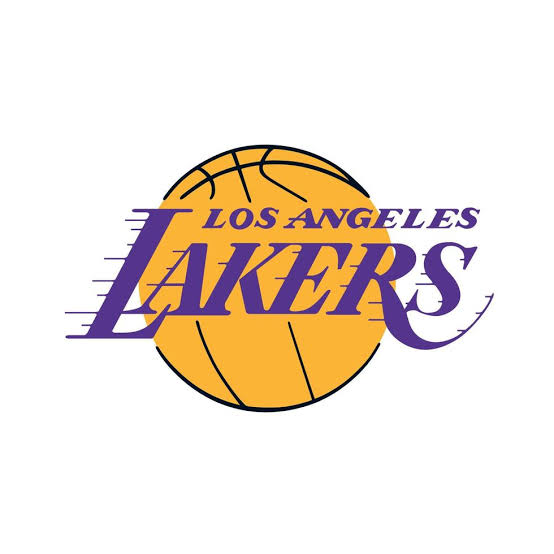
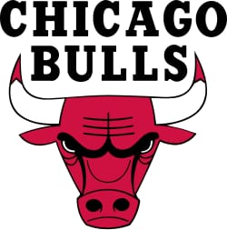
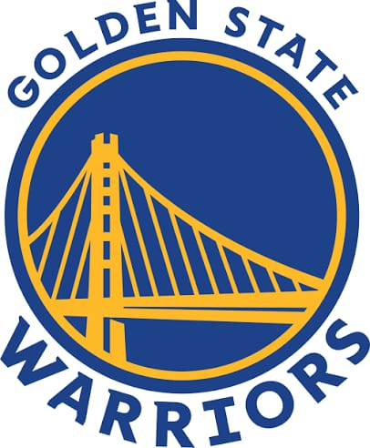

Los equipos más destacados de la National Basketball Association

Los Angeles Lakers son uno de los equipos más icónicos de la NBA, con una historia que abarca más de 70 años. Fundado en 1947, inicialmente en Minneapolis, se trasladaron a Los Ángeles en 1960. Conocidos como “Showtime Lakers” en los años 80, su estilo de juego rápido y ofensivo revolucionó el baloncesto profesional. Leyendas como Magic Johnson, Kareem Abdul-Jabbar, Shaquille O'Neal, Kobe Bryant y LeBron James han vestido su uniforme, llevando al equipo a ganar un total de 17 campeonatos, empatados con Boston Celtics como los máximos ganadores de la NBA. La franquicia ha sido clave en la globalización del baloncesto, inspirando a millones de aficionados y creando una identidad única basada en la excelencia, disciplina y espectáculo deportivo.

Los Chicago Bulls alcanzaron fama mundial en la década de los 90 gracias a Michael Jordan, considerado por muchos como el mejor jugador de todos los tiempos. Fundado en 1966, el equipo ganó seis campeonatos de la NBA en ocho años, dominando la liga con un estilo de juego intenso y táctico. La combinación de Jordan con Scottie Pippen y la dirección de Phil Jackson creó una dinastía que aún hoy inspira a jugadores y aficionados. Los Bulls son conocidos por su uniforme icónico rojo y negro, y su legado ha influido en la cultura, moda y publicidad del deporte. A lo largo de los años, otros jugadores destacados han continuado la historia de esta franquicia, manteniéndola competitiva y respetada en la liga.

Golden State Warriors es una de las franquicias más revolucionarias de la NBA moderna. Fundado en 1946, el equipo ha experimentado múltiples etapas de éxito y reconstrucción, alcanzando la cima durante la última década gracias a Stephen Curry, Klay Thompson y Draymond Green. Conocidos por su estilo ofensivo basado en triples y velocidad, los Warriors han ganado múltiples campeonatos recientes y han cambiado la manera en que se juega el baloncesto profesional, priorizando el tiro de larga distancia y la ofensiva colectiva. Además de los logros recientes, la franquicia posee una rica historia con jugadores destacados como Wilt Chamberlain y Rick Barry, consolidando su reputación como uno de los equipos más influyentes y admirados de la NBA.